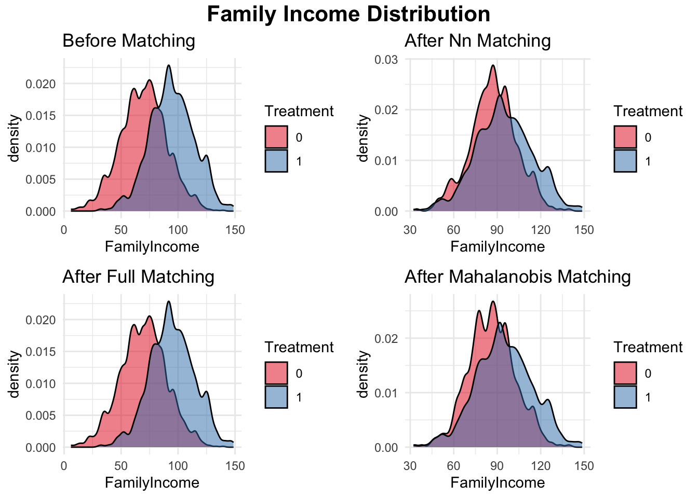
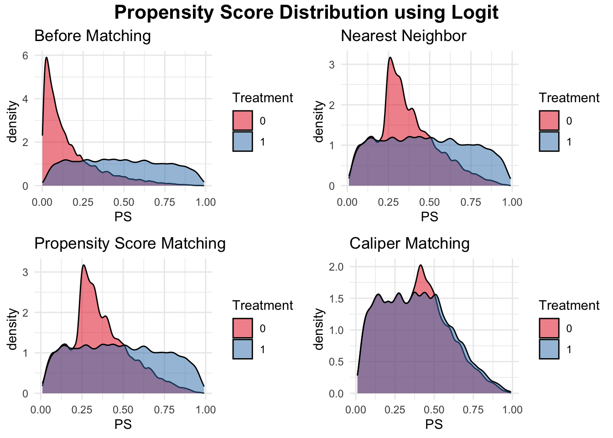
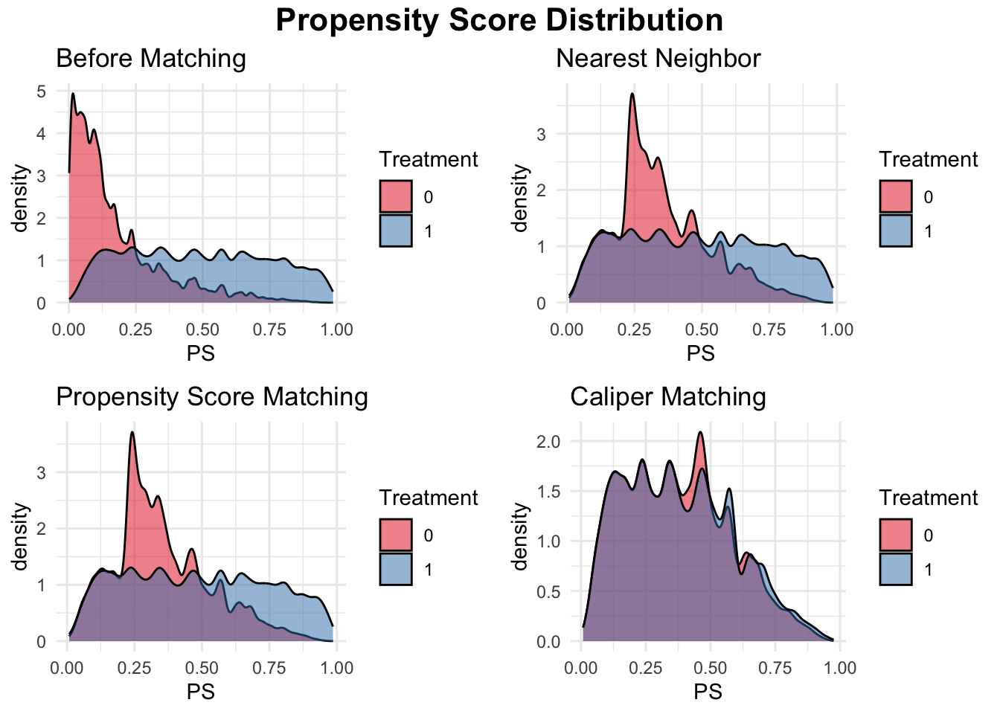

Chapter 20 Matching Methods
Building on the previous two chapters—where we introduced regression-based adjustment under selection on observables and extended it to high-dimensional settings using Double Machine Learning—this chapter focuses on alternative strategies for addressing confounding without relying entirely on parametric regression models. While regression methods offer flexibility, they impose functional form assumptions that may not align with how treatment is actually assigned in observational data.
Here, we introduce stratification, matching, and the propensity score framework as complementary tools that aim to create balance between treated and control groups based on observed covariates. These approaches offer intuitive, design-based solutions to the problem of selection bias and help approximate the conditions of a randomized experiment. We show how to implement stratification and nearest-neighbor matching, then turn to estimating propensity scores and using them to evaluate balance and overlap. We also demonstrate how to integrate modern machine learning tools, such as XGBoost, to estimate propensity scores for matching. In the next chapter, we build on this foundation by introducing inverse probability weighting (IPW) and doubly robust estimators, which combine modeling and weighting strategies to further improve robustness and efficiency. Together, these methods expand the causal inference toolkit for observational studies where treatment is not randomly assigned.
20.1 Subclassification or Stratification
Subclassification, also known as stratification, is a method in causal inference that divides units into discrete groups (subclasses) based on covariates (\(X_i\)) and estimates treatment effects within each group. The treatment effect within each subclass is calculated as the difference in mean outcomes between treated and untreated units, and the overall treatment effect is obtained by taking a weighted average across subclasses. The average treatment effect (ATE) is computed as:
\[\begin{equation} \text{ATE} = \sum_{s=1}^{S} w_s \cdot \text{CATE}_s \end{equation}\]
where \(S\) is the number of subclasses, \(w_s\) is the proportion of units in subclass \(s\), calculated as:
\[\begin{equation} w_s = \frac{n_s}{n} \end{equation}\]
where \(n_s\) is the number of units in subclass \(s\), and \(n\) is the total number of units in the sample. \(\text{CATE}_s\) is the conditional average treatment effect within subclass \(s\).
You determine \(S\) (the number of subclasses) by dividing the data into strata based on the values or ranges of the covariates \(X_i\). For a single categorical variable, \(S\) is the number of unique categories. For multiple categorical variables, \(S\) is the number of unique category combinations. For continuous variables, \(S\) is chosen based on quantiles or equal-sized groups. Typically, subclasses are created to ensure covariate balance, with 5–10 subclasses commonly recommended in practice.
For example, in the college scholarship case in the previous chapter, we could subclassify by university type (public, private, or non-profit) and estimate \(\text{CATE}_s\) within each group. The overall ATE is then obtained by weighting these subclass effects by the distribution of \(X_i\), ensuring that the effect reflects the population composition. The number of subclasses, \(S\), can be determined based on distinct categories for categorical covariates or by dividing continuous covariates into quantiles or equal-sized groups. In the previous chapter, we calculated subclass effects and showed the weighted ATE.
Subclassification provides a clear way to satisfy the Conditional Independence Assumption by assuming treatment is “as good as random” within each subclass. This assumption enables causal inference from observational data when selection on observables holds. For example, Cochran (1968) demonstrated that subclassification into a modest number of groups (e.g., five strata) can remove over 90% of bias in observational studies. Subclassification based on propensity scores, which summarize multiple covariates into a single score (\(P(D_i = 1 \mid X_i)\)), offers a more flexible alternative for handling continuous or high-dimensional covariates (Rosenbaum and Rubin, 1984). We will cover this approach later.
Despite its strengths, subclassification has notable limitations. First, it requires discrete covariates or the discretization of continuous variables, which can lead to information loss and arbitrary cutoff choices. For example, discretizing parental income into income brackets may ignore nuanced differences in earnings. Second, subclassification struggles with multi-level or non-discrete outcomes, such as treatment effects that vary continuously with \(X_i\). For these cases, methods like regression, matching, or machine learning approaches offer greater flexibility and precision.
The simulation implements subclassification by dividing the sample into five strata based on family income, a key covariate influencing both treatment assignment and earnings. Within each stratum, the treatment effect—defined as the difference in mean earnings between college graduates and non-graduates—is estimated. These within-stratum effects are then aggregated to compute the overall weighted average treatment effect on the treated (ATT). The weighting ensures that subclass effects contribute proportionally to the total estimate, aligning with the approach outlined earlier. The results illustrate how stratification accounts for covariate differences when estimating causal effects.
# Load necessary libraries
library(dplyr)
library(estimatr)
# Set seed for reproducibility
set.seed(42)
# Define sample sizes
N <- 20000
NT <- 5000 # Number in treatment (college graduates)
NC <- N - NT # Number in control (non-graduates)
# Generate earnings for treated and control groups
earnings_non_graduates <- rnorm(NC, mean = 50, sd = 10)
earnings_graduates <- rnorm(NT, mean = 53, sd = 10) # Mean increased by 3
# Generate family income (X) for both groups
family_income_non_graduates <- rnorm(NC, mean = 70, sd = 20) # Lower mean
family_income_graduates <- rnorm(NT, mean = 95, sd = 20) # Higher mean
# Merge into a single dataset
data <- data.frame(
ID = 1:N,
Treatment = c(rep(1, NT), rep(0, NC)),
X = c(family_income_graduates, family_income_non_graduates), # Covariate
Earnings = c(earnings_graduates, earnings_non_graduates) # Outcome
)
# Define quantile-based strata for family income (X)
data <- data %>%
mutate(Stratum = ntile(X, 5)) # Divide into 5 strata
# Estimate treatment effect within each stratum
results <- data %>%
group_by(Stratum) %>%
summarize(
ATT = mean(Earnings[Treatment == 1]) - mean(Earnings[Treatment == 0]),
N_treat = sum(Treatment == 1),
N_control = sum(Treatment == 0)
)
# Compute overall weighted ATT
weighted_ATT <- sum(results$ATT * (results$N_treat + results$N_control) / N)
# Display results
print(results)## # A tibble: 5 × 4
## Stratum ATT N_treat N_control
## <int> <dbl> <int> <int>
## 1 1 3.19 140 3860
## 2 2 3.06 406 3594
## 3 3 3.34 745 3255
## 4 4 3.29 1254 2746
## 5 5 3.05 2455 1545## Overall Weighted ATT: 3.184567Alternatives, such as matching, build upon the intuition of subclassification by directly pairing treated and untreated units, not discrete groups, based on their covariates or propensity scores. Matching avoids the need to discretize variables, making it suitable for continuous covariates and high-dimensional settings. We will explore these methods below, highlighting their ability to estimate treatment effects while addressing their challenges.
20.2 Matching Methods
Matching is another method for estimating treatment effects that addresses the fundamental problem of causal inference. Matching offers a solution by imputing the “missing” outcomes based on observed data, pairing each treated unit with the closest untreated unit (or vice versa) based on their covariates (\(X_i\)). Matching addresses the shortcomings of subclassification by directly pairing treated and untreated units based on their similarity in covariates, regardless of whether the covariates are continuous or high-dimensional.
The goal of matching is to find untreated units (\(j\)) that are most similar to treated units (\(i\)) in terms of their covariates. For each treated unit \(i\), the outcome of the closest untreated unit \(j\) serves as an estimate for the unobserved \(Y_i(0)\). The difference between the observed outcome \(Y_i(1)\) and the imputed \(Y_i(0)\) provides an estimate of the treatment effect for that unit. This method assumes that, based on observable characteristics, treated and untreated individuals are nearly identical, so any difference in outcomes is attributed to the causal effect of the treatment.
The average treatment effect on the treated (ATT) is then calculated as:
\[\begin{equation} \hat{\delta}_{\text{ATT}} = \frac{1}{N_1} \sum_{D_i = 1} \left( Y_i(1) - Y_j(0) \right) \end{equation}\]
where \(Y_j(0)\) is the observed outcome of the closest untreated unit to \(i\), and \(N_1\) is the number of treated units.
Alternatively, matching can use the average outcomes of the \(M\) closest matches to improve robustness:
\[\begin{equation} \hat{\delta}_{\text{ATT}} = \frac{1}{N_1} \sum_{D_i = 1} \left( Y_i(1) - \frac{1}{M} \sum_{m=1}^M Y_{j_m}(0) \right) \end{equation}\]
where \(Y_{j_m}(0)\) represents the outcomes of the \(m\)-th closest untreated match to \(i\).
We could impute potential outcomes for control units similar way and define the ATE and ATU equivalently. However, ATT is the most common causal effect, matching methods estimate
Lets illustrate this method with the following example. We want to estimate the causal effect of a college scholarship on annual earnings using exact 1-to-1 matching. Matching pairs treated (\(D_i=1\)) and untreated (\(D_i=0\)) individuals with identical covariates (\(X_i\)). Consider the following data:
## Warning: package 'knitr' was built under R version 4.3.3| ID | \(D_i\) | Parental Income |
GPA | SAT Score |
Univ. Type |
Field | Earnings |
|---|---|---|---|---|---|---|---|
| 1 | 1 | High | 3.8 | 1400–1600 | Public | STEM | 60000 |
| 2 | 0 | High | 3.8 | 1400–1600 | Public | STEM | 50000 |
| 3 | 1 | Medium | 3.2 | 1201–1400 | Private | Business | 72000 |
| 4 | 0 | Medium | 3.2 | 1201–1400 | Private | Business | 62000 |
| 5 | 1 | Low | 3.0 | 1000–1200 | Non-Profit | Arts | 45000 |
| 6 | 0 | Low | 3.0 | 1000–1200 | Non-Profit | Arts | 37000 |
The individual CATE for each treated unit is computed as the difference between their observed outcome (\(Y(1)_i\)) and the outcome of the matched control unit (\(Y(0)_j\)): \(\text{CATE}_{High} = 60,000 - 50,000 = 10,000,\) \(\text{CATE}_{Medium} = 72,000 - 62,000 = 10,000,\) \(\text{CATE}_{Low} = 45,000 - 37,000 = 8,000.\)
The ATT is the average of these effects: \(\hat{\delta}_{\text{ATT}} = \frac{1}{3} (10,000 + 10,000 + 8,000) = 9,333\)
This example illustrates how matching imputes unobserved potential outcomes and provides an estimate of the treatment effect. Here, the scholarship increases earnings for treated students by approximately $9,333 on average.
Alternatively, matching can improve robustness by using the average outcomes of the \(M\) closest untreated matches for each treated individual with various methods. This method accounts for the possibility that multiple units in the control group are similar to a treated unit based on their covariates. In larger datasets, averaging the outcomes of these similar control units provides a better proxy for the unobserved \(Y_i(0)\), reducing sensitivity to individual variability and noise. After imputing these averages, individual CATEs can be calculated and aggregated to estimate the ATT, providing a more stable and reliable estimate of treatment effects.
The goal of matching is to compare treated and untreated units that are similar in their covariates (\(X_i\)), thereby minimizing bias due to confounding. However, as the dimensionality of \(X_i\) increases, the likelihood of finding exact matches diminishes—a phenomenon known as the curse of dimensionality. Additionally, matching requires a clear definition of “closeness” between units, which depends on the chosen distance metric. Different metrics for “closeness” between units (check footnotes for their equations) lead to different matching methods such as exact, nearest neighbor, bandwidth, propensity score, caliper and optimal matching. “Closeness” is defined by:
- Exact Matching: Matches are only made when covariates are identical between treated and untreated units. Thus,“closeness” if perfect. This approach becomes impractical with high-dimensional or continuous \(X_i\).
- Normalized Euclidean Distance60: Distances are scaled by the inverse of the sample variance, suitable for normally distributed \(X_i\), but less effective for binary data.
- Mahalanobis Distance61: Distances are scaled by the inverse of the covariance matrix, providing a robust measure for normally distributed covariates but performing poorly with binary variables.
- Genetic Matching62: Uses optimization algorithms to minimize covariate imbalance across all variables, directly improving balance (Diamond and Sekhon).
Besides the exact matching method discussed above, Nearest Neighbor Matching is one of the most widely used approaches. In this method, each treated unit is matched to the untreated unit with the closest covariates, based on a chosen distance metric such as Euclidean or Mahalanobis distance. This non-parametric approach makes no assumptions about the functional form of \(Y(X)\), offering a flexible way to estimate causal effects. The method can also be extended to \(K\)-nearest neighbors, where the \(K\) closest untreated units are selected for each treated unit, and their outcomes are averaged to estimate \(\hat{Y}_i(0)\). This generalization reduces variance while retaining the non-parametric nature of the method.
In bandwidth matching, for each treated unit \(i \in T\), all untreated units \(j \in U\) whose covariates fall within a defined bandwidth \(h\) are selected as matches, such that \(X_j \in [X_i - h, X_i + h]\). The outcomes of these untreated units are then averaged to estimate the counterfactual for the treated unit, \(\hat{Y}_i(0)\). This method ensures that only untreated units with covariate values sufficiently close to those of the treated unit are considered valid matches, reducing bias. However, if the bandwidth \(h\) is too narrow, some treated units may lack valid matches, leading to higher variance. Conversely, wider bandwidths include more observations, reducing variance but potentially introducing bias by allowing less similar matches.
Choosing the bandwidth involves a bias-variance tradeoff and is critical for the reliability of the causal estimates. Methods such as cross-validation can assist in selecting the optimal bandwidth by minimizing prediction error in a validation sample. This approach balances the tradeoff by systematically testing different bandwidths and choosing the one that maximizes matching accuracy. Studies like Imbens and Wooldridge (2009) and Stuart (2010) emphasize the importance of bandwidth selection and its impact on matching performance in observational studies.
Another common approach is Propensity Score Matching (PSM), which matches units based on their propensity scores, \(P(D_i=1 \mid X_i)\), instead of directly on covariates. The propensity score represents the probability of receiving treatment given covariates. This technique reduces the dimensionality problem and ensures comparability, and it will be discussed in detail in the next section.
Caliper Matching imposes a constraint on the maximum allowable difference in propensity scores between matched units. Formally, a treated unit \(i\) is only matched to a control unit \(j\) if \(|P(X_i) - P(X_j)| \leq \delta\) where \(\delta\) is a pre-specified caliper width. This method prevents poor matches and improves balance but may reduce the number of matched pairs.
Optimal Matching selects pairs by minimizing the total distance between matched units across the entire sample rather than one-to-one nearest neighbor selection. This approach solves a global optimization problem, ensuring the best overall balance while preserving sample size.
20.2.1 Factors influence the implementation of matching methods:
Several factors influence the implementation of matching methods. One key decision is the size of \(M\), the number of control units matched to each treated unit. Smaller \(M\) minimizes bias since additional matches are less similar, but larger \(M\) reduces variance by increasing the matched sample size.
Another consideration is whether matching is performed with or without replacement. Matching with replacement means multiple treated units can match to the same control unit. This may reduces bias by allowing control matches to be reused for multiple treated units. However, this introduces dependence among matched controls, complicating inference and leading to larger standard errors. Matching without replacement avoids this issue but may result in unmatched treated units, reducing the effective sample size.Also, the ordering of the treated units matters, as the first treated unit matched to a control unit may influence subsequent matches. Randomizing the order of treated units can mitigate this issue.
Handling ties is another practical issue. When multiple controls are equally “close” to a treated unit, one approach is to select a control randomly, though this lacks consistency. Alternatively, averaging the outcomes of tied controls provides a more stable estimate. Finally, the choice of which treatment effect to estimate—ATE, ATT, or ATU—depends on the research question and the availability of suitable matches for treated or control units. Each decision involves a trade-off between bias, variance, and the practical goals of the analysis.
20.2.2 Assessing Balance
After matching, the covariate distributions for the treatment and control groups should be comparable to ensure valid causal estimates. Assessing balance is a crucial step in validating the results of matching. It ensures that the treated and control groups are comparable, making it possible to attribute differences in outcomes to the treatment rather than pre-existing differences in covariates. This involves two key diagnostics: overlap and balance checks.
Overlap, or common support, ensures that the treated and control groups have sufficiently overlapping covariate distributions. Without overlap, some treated units may lack suitable matches in the control group, or vice versa, making it impossible to estimate causal effects for those units. Overlap can be assessed visually by comparing histograms or density plots of covariates or propensity scores for treated and control groups. Regions with no overlap indicate areas where causal estimates are unreliable. To address this, researchers often restrict the sample to the overlapping region by trimming unmatched units, focusing on subsets of the data where treated and control units are comparable. (The formal condition for overlap is provided in the assumptions section.)
Balance checks evaluate whether covariate distributions are similar between treated and control groups after matching. Common methods for assessing balance include:
- Mean Differences: Comparing the means of covariates between groups before and after matching to ensure any differences are minimized post-matching.
- Standardized Bias: A more robust measure is the standardized bias, which evaluates the difference in covariate means between the treatment and control groups, scaled by the standard deviation of the covariate in the treated group. For a covariate \(X_i\), the standardized bias is calculated as:
\[\begin{equation} \text{Bias}_{X_i} = \frac{\bar{X}_t - \bar{X}_c}{\sigma_t} \end{equation}\]
where \(\bar{X}_t\) and \(\bar{X}_c\) are the mean values of \(X_i\) for the treated and control groups, respectively, and \(\sigma_t\) is the standard deviation of \(X_i\) in the full treated group. Comparing the standardized bias before and after matching provides a clearer indication of balance, with smaller post-matching bias values reflecting improved comparability between the groups. Yes, the statement is supported by commonly cited thresholds in the causal inference literature. Standardized bias values below 10% are widely regarded as acceptable for covariate balance, as suggested by Cochran and Rubin (1973) and supported by subsequent studies like Austin (2009).
Graphical Diagnostics: such as Love plots (Love, 2002), which display standardized bias for each covariate before and after matching, and density plots (Rosenbaum and Rubin, 1983), which compare the distributions of covariates or propensity scores across groups, are essential tools for evaluating balance and overlap.
Variance Ratios: compare the variability of covariates between treated and control groups. A variance ratio close to 1 indicates similar variability, which is essential for ensuring that treatment effects are estimated consistently across groups. Rubin (2001) suggests using variance ratios as a diagnostic for balance, with acceptable thresholds typically between 0.8 and 1.25. While variance ratios alone do not confirm balance, they complement other diagnostics, such as standardized bias and graphical tools, by highlighting differences in variability that could affect matching quality.
Balance checks demonstrate whether matching has successfully eliminated systematic differences in covariates. Many studies assess balance by presenting tables of covariate means and p-values before and after matching. However, p-values can be misleading as they are sensitive to sample size changes and may not reliably indicate balance improvement. It is best practice to report these checks before and after matching, focusing on standardized bias and graphical methods rather than relying solely on p-values, which are sensitive to sample size changes and less informative for balance assessment.
In the simple simulation, we compare different matching methods for estimating the treatment effect of college graduation on earnings while controlling for family income, and additional a continuous covariate and a binary covariate. First, we check the initial balance of these covariates between treated (college graduates) and control (non-graduates) groups using standardized mean differences. Since there are initial differences between the two groups, matching is applied to improve balance. We implement three matching methods: nearest-neighbor matching, full matching, and Mahalanobis distance matching. Nearest-neighbor matching assigns each treated unit to the closest control based on observed covariates. Full matching allows each treated unit to be matched to multiple control units and vice versa, improving the use of available data. Mahalanobis distance matching uses a distance metric to find the most similar pairs based on multiple covariates. After matching, we reassess balance and find that all methods reduce covariate imbalance, though their effectiveness varies. We then estimate the average treatment effect on the treated (ATT) by comparing mean earnings between matched treated and control groups. Finally, we visualize the family income distribution before and after matching using density plots, allowing us to assess how well each method aligns the distributions of the treated and control groups. You can apply this process to any actual data; this simulation simply demonstrates the matching procedures.
# Load necessary libraries
library(MatchIt)
library(dplyr)
library(tableone)
library(ggplot2)
# Set seed for reproducibility
set.seed(42)
# Define sample sizes
N <- 2000
NT <- 500
NC <- N - NT
# Generate earnings for treated and control groups
earnings_non_graduates <- rnorm(NC, mean = 50, sd = 10)
earnings_graduates <- rnorm(NT, mean = 53, sd = 10)
# Generate covariates
family_income_non_graduates <- rnorm(NC, mean = 70, sd = 20)
family_income_graduates <- rnorm(NT, mean = 95, sd = 20)
# Generate 1 continuous variable
cont_var1_non_graduates <- rnorm(NC, mean = 5, sd = 2)
cont_var1_graduates <- rnorm(NT, mean = 6, sd = 2)
# Generate 1 binary variables
binary_var1_non_graduates <- rbinom(NC, 1, 0.4)
binary_var1_graduates <- rbinom(NT, 1, 0.6)
# Merge into a single dataset
data <- data.frame(
ID = 1:N,
Treatment = c(rep(1, NT), rep(0, NC)),
FamilyIncome = c(family_income_graduates, family_income_non_graduates),
ContVar1 = c(cont_var1_graduates, cont_var1_non_graduates),
BinaryVar1 = c(binary_var1_graduates, binary_var1_non_graduates),
Earnings = c(earnings_graduates, earnings_non_graduates)
)
# STEP 1: Check Initial Covariate Balance
table1 <- CreateTableOne(vars = c("FamilyIncome", "ContVar1", "BinaryVar1"),
strata = "Treatment", data = data, test = TRUE)
print(table1) ## Stratified by Treatment
## 0 1 p test
## n 1500 500
## FamilyIncome (mean (SD)) 69.77 (20.40) 94.68 (19.56) <0.001
## ContVar1 (mean (SD)) 4.98 (2.05) 6.07 (2.08) <0.001
## BinaryVar1 (mean (SD)) 0.40 (0.49) 0.58 (0.49) <0.001# STEP 2: Matching Methods Without Propensity Scores
# 1. Nearest-Neighbor Matching (based on covariates)
nn_match <- matchit(Treatment ~ FamilyIncome + ContVar1 + BinaryVar1,
data = data, method = "nearest")
matched_data_nn <- match.data(nn_match)
# 2. Full Matching (each treated unit matched to multiple control units)
full_match <- matchit(Treatment ~ FamilyIncome + ContVar1 + BinaryVar1,
data = data, method = "full")
matched_data_full <- match.data(full_match)
# 3. Mahalanobis Distance Matching
mahalanobis_match <- matchit(Treatment ~ FamilyIncome + ContVar1 + BinaryVar1,
data = data, method = "nearest", distance = "mahalanobis")
matched_data_mahalanobis <- match.data(mahalanobis_match)
# STEP 3: Check Covariate Balance After Matching
balance_nn <- CreateTableOne(vars = c("FamilyIncome", "ContVar1", "BinaryVar1"),
strata = "Treatment", data = matched_data_nn, test = TRUE)
balance_full <- CreateTableOne(vars = c("FamilyIncome", "ContVar1", "BinaryVar1"),
strata = "Treatment", data = matched_data_full, test = TRUE)
balance_mahalanobis <- CreateTableOne(
vars = c("FamilyIncome", "ContVar1", "BinaryVar1"),
strata = "Treatment",
data = matched_data_mahalanobis,
test = TRUE
)
print(balance_nn) ## Stratified by Treatment
## 0 1 p test
## n 500 500
## FamilyIncome (mean (SD)) 87.35 (16.02) 94.68 (19.56) <0.001
## ContVar1 (mean (SD)) 5.72 (2.05) 6.07 (2.08) 0.006
## BinaryVar1 (mean (SD)) 0.51 (0.50) 0.58 (0.49) 0.026## Stratified by Treatment
## 0 1 p test
## n 1500 500
## FamilyIncome (mean (SD)) 69.77 (20.40) 94.68 (19.56) <0.001
## ContVar1 (mean (SD)) 4.98 (2.05) 6.07 (2.08) <0.001
## BinaryVar1 (mean (SD)) 0.40 (0.49) 0.58 (0.49) <0.001## Stratified by Treatment
## 0 1 p test
## n 500 500
## FamilyIncome (mean (SD)) 86.25 (16.20) 94.68 (19.56) <0.001
## ContVar1 (mean (SD)) 5.72 (1.97) 6.07 (2.08) 0.005
## BinaryVar1 (mean (SD)) 0.57 (0.49) 0.58 (0.49) 0.949# STEP 4: Estimate Treatment Effect After Matching
estimate_ATT <- function(matched_data) {
mean(matched_data$Earnings[matched_data$Treatment == 1]) -
mean(matched_data$Earnings[matched_data$Treatment == 0])
}
cat("ATT (Nearest Neighbor):", estimate_ATT(matched_data_nn), "\n")## ATT (Nearest Neighbor): 3.323404## ATT (Full Matching): 3.61869## ATT (Mahalanobis Matching): 3.72427# STEP 5: Visualizing Matching Performance
# Sample a smaller subset for plotting (e.g., 200 observations)
plot_data <- data %>% sample_n(200)
# Visualizing Family Income Distribution Before Matching
plot_before <- ggplot(data, aes(x = FamilyIncome, fill = as.factor(Treatment))) +
geom_density(alpha = 0.5, color = "black", adjust = 0.5) +
scale_fill_brewer(palette = "Set1") +
labs(title = "Before Matching", fill = "Treatment") +
theme_minimal()
# Visualizing Family Income Distribution After Matching
plot1 <- ggplot(matched_data_nn, aes(x = FamilyIncome,
fill = as.factor(Treatment))) +
geom_density(alpha = 0.5, color = "black", adjust = 0.5) +
scale_fill_brewer(palette = "Set1") +
labs(title = "After Nn Matching", fill = "Treatment") +
theme_minimal()
plot2 <- ggplot(matched_data_full, aes(x = FamilyIncome,
fill = as.factor(Treatment))) +
geom_density(alpha = 0.5, color = "black", adjust = 0.5) +
scale_fill_brewer(palette = "Set1") +
labs(title = "After Full Matching", fill = "Treatment") +
theme_minimal()
plot3 <- ggplot(matched_data_mahalanobis, aes(x = FamilyIncome,
fill = as.factor(Treatment))) +
geom_density(alpha = 0.5, color = "black", adjust = 0.5) +
scale_fill_brewer(palette = "Set1") +
labs(title = "After Mahalanobis Matching", fill = "Treatment") +
theme_minimal()
library(gridExtra)
library(grid)
# Create the arranged plot with a title
grid.arrange(
arrangeGrob(
plot_before, plot1, plot2, plot3,
ncol = 2, nrow = 2,
top = textGrob("Family Income Distribution", gp = gpar(fontsize = 16,
fontface = "bold"))
)
)
20.2.3 Matching: Benefits and Limitations
While matching is a powerful tool for causal inference, it comes with several caveats and challenges:
Bias from Imperfect Matches: Matching suffers from bias due to imperfect matches, particularly in high-dimensional settings. According to Abadie and Imbens (2002), the bias is of order \(N^{-1 / \text{dim } X}\), where \(N\) is the sample size and \(\text{dim } X\) is the number of covariates. Bias remains small when the control group is much larger than the treated group (\(N_0 \gg N_1\)) and when \(\text{dim } X = 1\). However, as \(\text{dim } X\) increases, the bias becomes comparable to or even dominates the standard error. Bias correction methods, such as the Abadie-Imbens correction, are essential in such cases.
Inference Challenges: Conducting valid inference with matching is complex. Abadie and Imbens (2006) provide an asymptotic variance formula for matching estimators, but standard techniques like bootstrapping fail due to the discrete nature of the matching procedure (Abadie and Imbens, 2008). Advanced methods for variance estimation are required to ensure accurate inference.
Efficiency Limitations: Matching is less efficient with a fixed the ratio of control units to treated units, (\(R\)), in the matching process. However, as \(R \to \infty\), efficiency improves, especially when combined with bias correction (Lin, Ding, and Han, 2023). This underscores the value of large samples and careful bias adjustment in making matching methods more effective.
Computational Complexity: Matching can be computationally intensive, particularly with large datasets or high-dimensional covariates. Algorithms must handle both the distance calculations and the optimization problem of finding the best matches, which can be resource-intensive. One of the biggest challenges in matching is the curse of dimensionality, where increasing the number of covariates can make it difficult to find good matches. As seen in this simulation, we only used three covariates for matching, but as the number of covariates increases, computational challenges and poor overlap may arise. To address this, we recommend several adjustments: if computational limits arise, substantially decreasing N can help (like we decreased N to 2000 in this simulation); for visualization, we used
plot_data <- data %>% sample_n(200)to reduce dataset size used for plotting; and to smooth density plots, we usedadjust = 0.5to modify bandwidth and avoid overfitting. These adjustments improve computational feasibility and visualization while maintaining interpretability.
These caveats emphasize the importance of careful implementation and adjustment to improve the reliability of matching. Despite its limitations, matching remains a valuable tool in causal inference, offering notable advantages over standard regression methods.
Matching methods are widely used in causal inference to estimate treatment effects by creating comparable groups of treated and untreated units based on observed covariates. Traditional regression models, as discussed in the previous chapter, also rely on the assumption that selection into treatment is based only on observable characteristics, meaning that any bias can be eliminated by controlling for these variables. Given the relative simplicity of regression, why not use it instead of matching? Matching offers several advantages that standard regression does not.
First, matching does not impose a linear functional form on the relationship between treatment and outcome. If the Conditional Independence Assumption (CIA) holds but the relationship is nonlinear, matching remains a consistent estimator, whereas regression may introduce bias due to incorrect functional form specification (Imbens & Rubin, 2015). Second, matching explicitly addresses the common support problem by ensuring that treated units are only compared to similar untreated units. Unlike regression, which extrapolates across the entire sample, matching makes it clear whether sufficient overlap exists between treated and control observations. Without proper overlap, regression may estimate effects in regions where no comparable untreated units exist, leading to unreliable results (Rosenbaum & Rubin, 1983).
Another key advantage is that matching assigns different weights to observations when constructing the counterfactual. In Ordinary Least Squares (OLS), all control units contribute to estimating the expected counterfactual for treated units. In contrast, matching ensures that only untreated units with similar covariates to each treated unit influence the counterfactual estimation, reducing the risk of extrapolation bias. However, matching methods can also face challenges, particularly when dealing with high-dimensional covariates. If multiple covariates each have several discrete levels, the number of possible combinations can grow exponentially, leading to sparse data in many strata (Abadie & Imbens, 2011). This issue, often referred to as the curse of dimensionality, makes it difficult to find exact matches for treated units, highlighting the importance of alternative approaches such as propensity score matching or weighting methods to address these limitations.
The MatchIt package in R provides a comprehensive framework for implementing various matching techniques, including nearest-neighbor, optimal, and full matching. The package offers flexibility in defining distance metrics, such as Euclidean or Mahalanobis distance, and supports adjustments like calipers or trimming to improve balance. MatchIt also facilitates balance diagnostics, such as love plots and standardized bias checks, ensuring robust comparisons between groups (MatchIt Documentation).
In a broader context, Stuart (2010) provides a comprehensive review of matching methods, highlighting their role in reducing confounding and improving comparability in observational studies. The review covers various approaches, including nearest-neighbor matching, optimal matching, and full matching, while discussing their respective advantages and limitations. Stuart emphasizes the importance of overlap and balance diagnostics, such as standardized mean differences, to validate matching results and reduce bias. More recent reviews, such as King and Nielsen (2019), critique some traditional matching practices and advocate for refined methodologies like coarsened exact matching and genetic matching, which optimize balance and address the curse of dimensionality. For readers seeking practical implementation guides, the MatchIt package documentation ([Ho et al., 2007]) provides a detailed explanation of matching techniques and their application in R. Together, these resources offer a robust foundation for understanding and applying matching methods effectively in causal inference.
In addition to R, Stata and Python offer powerful tools for implementing matching methods in causal inference. Stata’s teffects command provides built-in functions for propensity score matching, inverse probability weighting, and nearest-neighbor matching, allowing researchers to estimate treatment effects with robust standard errors (Abadie & Imbens, 2016). For more advanced options, the psmatch2 and cem (Coarsened Exact Matching) packages extend Stata’s capabilities with additional balance diagnostics and matching algorithms (Leuven & Sianesi, 2003). In Python, the causalml and pymatch libraries offer flexible implementations of propensity score matching, machine learning-based matching, and balance checks, enabling users to leverage modern statistical techniques for causal inference (Chen et al., 2020). These tools, along with extensive documentation and methodological advancements, provide researchers with robust alternatives to implement matching across different software environments.
Despite their flexibility, traditional matching methods face challenges in settings with numerous covariates or sparse overlap. Propensity score matching (PSM) offers an elegant solution by reducing the dimensionality of the matching problem. Instead of matching directly on covariates, PSM matches units based on their propensity scores, \(P(D_i = 1 \mid X_i)\), which represent the probability of treatment given the covariates. This approach simplifies the matching process, improves computational efficiency, and ensures balance across a single propensity score rather than multiple covariates. In the next section, we explore PSM and its application in causal inference.
20.3 Propensity Score Matching (PSM)
Propensity Score Matching (PSM) is a popular method for estimating causal effects in observational studies. It simplifies matching by summarizing all covariates (\(X_i\)) into a single propensity score, \(p(X_i) = P(D_i = 1 \mid X_i)\), representing the probability of receiving treatment given the covariates (Rosenbaum and Rubin, 1983). (The propensity score is also known as the conditional treatment probability, and \(e(X_i)\) is also very common notation.)
The first step in implementing PSM is to obtain propensity scores, which we will discuss below. Once the propensity scores are estimated, they can be used to calculate treatment effects through various methods. These include direct regression adjustment, stratified regressions, matching methods, inverse probability weighting (IPW), or machine learning-based approaches such as causal random forests, Bayesian additive regression trees (BART), doubly robust or double machine learning. Among these, matching methods are the most commonly used. PSM addresses the dimensionality problem in traditional matching by ensuring balance across a single score rather than multiple covariates. The counterfactual outcome for treated units is approximated by the average outcome of matched untreated units with similar propensity scores, under the assumption that no unobserved factors significantly affect both treatment assignment and the outcome. The treatment effect is estimated as the average difference in outcomes between treated units and their matched controls. Meanwhile double machine learning (DML) is increasingly gaining popularity in economics due to its ability to handle high-dimensional data and account for model selection and regularization.
Rosenbaum and Rubin’s (1983) foundational work introduced two critical propositions that establish the theoretical basis for propensity scores, particularly their role in balancing covariates and enabling causal inference in observational studies:
Proposition 1: If the propensity score is defined as \(p(X_i) = P(D_i = 1 \mid X_i)\), then \(D_i \perp X_i \mid p(X_i)\), meaning treatment assignment \(D_i\) is independent of covariates \(X_i\) given the propensity score.63
Proposition 2: If the Conditional Independence Assumption (CIA) holds, such that treatment assignment is independent of potential outcomes given covariates \(X_i\), \(D_i \perp (Y_i(0), Y_i(1)) \mid X_i,\) then treatment assignment is also independent of potential outcomes given the propensity score \(p(X_i)\), \(D_i \perp (Y_i(0), Y_i(1)) \mid p(X_i)\). This result implies that adjusting for the scalar propensity score \(p(X_i) = P(D_i = 1 \mid X_i)\) is sufficient for eliminating bias due to observed confounders, simplifying the estimation of causal effects.64
These propositions highlight that propensity scores provide a sufficient statistic for balancing observed covariates between treated and control groups under the CIA. This simplifies matching, stratification, or weighting procedures by reducing the dimensionality of covariates.
20.3.1 Estimating the Propensity Score
The true propensity score is typically unknown and needs to be estimated in the data prior to implementing in causal effect estimation. Estimating the propensity score involves two critical decisions: selecting the estimation model and determining which variables to include in the model. The propensity score, defined as \(p(X_i) = P(D_i = 1 \mid X_i)\), represents the conditional probability of receiving treatment given observed covariates.
The propensity score frequently estimated using traditional parametric methods such as logistic regression or probit models, or recently with more flexible machine learning algorithms like random forests, gradient boosting, or neural networks. eventhough it is possible if we apply nonparametric methods like series or kernel regression the curse of dimensionality kicks back in w.r.t. the estimation of propensity score. The choice of method depends on the complexity of the dataset and the relationships between the covariates and treatment assignment. Parametric models are suitable for smaller datasets or when the relationships are relatively simple, while machine learning methods are better equipped to handle nonlinearity, interactions, and high-dimensional covariates.
The Conditional Independence Assumption (CIA) requires that, conditional on the propensity score, the outcome variable(s) must be independent of treatment. Heckman, Ichimura, and Todd (1997) demonstrate that omitting important variables can severely bias the resulting treatment effect estimates. Therefore, variable selection should prioritize covariates that influence both the likelihood of treatment assignment (\(D_i\)) and the outcome variable (\(Y_i\)). Including irrelevant variables does not generally harm the validity of the estimates but can reduce precision, whereas omitting relevant variables leads to biased estimates.
For example, in estimating the effect of a college scholarship on earnings, we can use a logit model to calculate the propensity score, \(p(X_i) = P(D_i = 1 \mid X_i)\). The logit model specifies:
\[ \scriptsize p(X_i) = \frac{\exp(\beta_0 + \beta_1 \text{Parental Income} + \beta_2 \text{GPA} + \beta_3 \text{SAT Score} + \beta_4 \text{University Type} + \beta_5 \text{Field of Study})}{1 + \exp(\beta_0 + \beta_1 \text{Parental Income} + \beta_2 \text{GPA} + \beta_3 \text{SAT Score} + \beta_4 \text{University Type} + \beta_5 \text{Field of Study})} \normalsize \]
This formulation ensures that the propensity score \(p(X_i)\) is always between 0 and 1, making it a valid probability. By summarizing the relationship between these covariates and the likelihood of receiving a scholarship, the logit model simplifies the matching process. Using these scores, treated and control groups can be balanced to estimate the causal effect of scholarships on earnings.
After obtaining propensity scores, typically we need to assess overlap. Overlap, or common support, ensures that treated and control units have similar propensity scores, making meaningful comparisons possible. This step is conducted before matching by examining the distribution of propensity scores across treated and control groups. Diagnostics such as histograms, density plots, or propensity score overlap plots help identify regions where treated units lack comparable controls (or vice versa). If overlap is poor, trimming or restricting the sample to the region of common support is often necessary.
Once the propensity scores are estimated and assessed for overlap, they can be used to calculate treatment effects through various methods. Lets discuss matching methods, then inverse probability weighting (IPW).
20.3.2 Matching Methods in PSM
The purpose of using the propensity score \(p(X_i)\) is to identify and match treated and control observations that are “close” or nearly identical in terms of their likelihood of treatment, ensuring comparability for estimating causal effects. Several matching techniques are available after estimating propensity scores, each with its own strengths and considerations:
Nearest-Neighbor Matching: This method matches each treated unit to the control unit with the closest propensity score. It can be implemented as one-to-one matching or extended to \(K\)-nearest neighbors, where the average outcomes of the \(K\) closest controls are used. This approach is straightforward but may not always ensure optimal balance.
Caliper Matching: A caliper sets a maximum allowable threshold (caliper) between the propensity scores of treated and control units. For example, if the caliper is set to 0.1, treated and control units are matched only if their propensity score difference is \(\leq0.1)\). Matches outside this threshold are excluded, reducing the risk of poor matches. A variant, radius matching, adapts the caliper size as a fixed proportion of the standard deviation of the propensity score, improving flexibility and maintaining balance.
Optimal Matching: Optimal matching minimizes the total distance between treated and control pairs across the sample. It considers all possible pairings and selects the combination that achieves the best overall balance. This method is computationally intensive but provides the best possible matches, reducing bias and improving precision. Optimal matching can be implemented using algorithms like the Hungarian algorithm or genetic matching, which optimize the matching process to achieve the closest possible matches.
Stratification and Interval Matching: Units are grouped into strata or intervals based on their propensity scores, and treatment effects are estimated within each stratum. This method pairs multiple treated and control units within each interval, maximizing data usage while minimizing bias.
Kernel Matching: This non-parametric approach assigns weights to all control units based on their distance in propensity scores from each treated unit, with closer matches receiving higher weights. Common kernels include Gaussian and Epanechnikov. Variants such as local linear matching (LLM) extend this approach by fitting local regressions to further refine the counterfactual estimation.
Full Matching: Full matching combines the strengths of nearest-neighbor and optimal matching by ensuring that all treated units are matched to control units and vice versa. This method minimizes bias by maximizing the number of matched pairs, improving balance and reducing variance.
The choice of matching method depends on the context of your study, the characteristics of your data, and your research objectives. Below are common choices for the selection:
| Scenario | Recommended Methods |
|---|---|
| Few treated units, large control group | Nearest-neighbor matching, caliper or optimal matching |
| High-dimensional covariates | Propensity score matching, kernel matching, machine learning |
| Poor overlap in covariates | Caliper matching, trimming |
| Maximizing sample size | Full matching, inverse probability weighting |
| Focus on ATT | Nearest-neighbor matching, caliper matching |
| Focus on ATE | Kernel matching, IPW |
Machine learning methods offer flexible and powerful tools for estimating propensity scores, particularly in settings with high-dimensional covariates or complex relationships between covariates and treatment assignment. Traditional parametric methods like logistic or probit regression assume linearity and additivity, which may not hold in real-world data. While nonparametric methods such as kernel or Nearest-neighbor matching provide more flexibility in estimating propensity scores. However, these nonparametric approaches suffer from the curse of dimensionality, where their performance degrades as the number of covariates increases, making them less practical for high-dimensional datasets often encountered in observational studies. In the MatchIt package, users can also estimate propensity scores directly using classic methods like logistic or probit models, caliper or optimal matching by specifying these options in the distance argument, seamlessly integrating propensity score estimation with matching implementation.
In contrast, machine learning approaches such as random forests, gradient boosting machines (GBMs), and neural networks can model nonlinearities and interactions without pre-specifying the functional form and high-dimensional datasets. For instance, random forests use decision trees to capture complex patterns, while GBMs iteratively refine the propensity score model by minimizing prediction errors. Gradient Boosting Machines (GBMs) offer powerful methods for estimating propensity scores, particularly in datasets with nonlinear relationships or high-dimensional covariates. Several GBM implementations are widely used. Traditional GBM, available in the gbm package, constructs an ensemble of decision trees iteratively, minimizing a loss function like logistic loss for binary treatment assignment. XGBoost, implemented in the xgboost package, extends GBM with additional features like L1/L2 regularization, tree pruning, and parallel processing, making it faster and less prone to overfitting. LightGBM, supported by the lightgbm package, further optimizes gradient boosting by using histogram-based learning and leaf-wise tree growth, improving speed and memory efficiency for large datasets. CatBoost, accessible through the catboost package, is designed for datasets with categorical variables, allowing direct handling of such data without extensive preprocessing. These GBM frameworks not only improve the accuracy of propensity score estimation but also provide robust handling of complex interactions and scalability for large observational studies.
Neural networks are particularly suited for very high-dimensional datasets, leveraging layers of transformations to capture intricate dependencies between covariates. Another powerful method, Super Learner, combines multiple algorithms to create an ensemble estimator, selecting the optimal combination based on cross-validation. These machine learning methods improve the precision of propensity score estimation. However, they often require larger datasets and careful parameter tuning to avoid overfitting. Each method has its strengths and limitations, and researchers should carefully consider these factors when selecting an appropriate matching strategy. The choice of method should prioritize balance, overlap, and the research question at hand, ensuring that the treatment effect estimates are reliable and interpretable.
20.3.3 Assessing Balance in PSM
After performing propensity score matching (PSM), it is crucial to evaluate whether the matched sample achieves balance between treated and control groups. The primary goal is to ensure that differences in covariates, which could bias treatment effect estimates, are minimized. While balance diagnostics in matching focus on covariates directly, in PSM, we assess balance both in terms of covariates and propensity scores to confirm that the matching procedure has successfully adjusted for pre-treatment differences.
Standardized bias, variance ratios, and t-tests are commonly used to compare covariates before and after matching. A standardized bias below 10% is often considered acceptable. While t-tests are sometimes reported, they are sensitive to sample size and may not always be informative. Graphical methods such as love plots (which visualize standardized mean differences) and density plots (which compare the distribution of propensity scores between groups) are widely used. The MatchIt package in R provides built-in balance diagnostics via the summary(matchit_object) function, which reports standardized mean differences, variance ratios, and overall balance metrics.
In empirical research, papers typically present balance tables showing covariate means and standardized differences before and after matching, often including multiple matching models for comparison. The most common approach for comparing different matching models (e.g., nearest neighbor, caliper, or kernel matching) is to assess how well each method reduces covariate imbalance while retaining sufficient sample size. Researchers may report overall balance improvement across models and select the approach that achieves the best tradeoff between balance and efficiency.
20.4 Calculation of Treatment Effects
After estimating the propensity score \(p(X_i)\), we first check for overlap to ensure that treated and control units have common support. Next, we perform matching to create comparable groups, followed by balance assessment to confirm that covariates are well-matched. Once we have a balanced sample, treatment effects can be estimated using various approaches, including direct regression adjustment, matching-based blocking methods, and reweighting techniques. Each method has its own strengths and assumptions, influencing the interpretation of the estimated causal effects.
20.4.1 Regression Adjustment Including Propensity Score
One approach to estimating treatment effects is to include the propensity score \(p(X_i)\) as a covariate in a regression model. This method aims to control for any residual differences between treated and control units that may persist even after matching. The general specification is:
\[\begin{equation} Y_i = \alpha + \delta D_i + f(p(X_i)) + \varepsilon_i \end{equation}\]
where \(Y_i\) is the outcome, \(D_i\) is the treatment indicator, and \(p(X_i)\) is the estimated propensity score. The function \(f(p(X_i))\) can be specified flexibly, such as linear, quadratic, or spline transformations of \(p(X_i)\). The coefficient \(\delta\) represents the treatment effect, assuming that \(p(X_i)\) fully captures confounding effects.
A common implementation of this approach is regression adjustment, where a linear specification of \(f(p(X_i))\) is used:
\[\begin{equation} Y_i = \beta D_i + \gamma p(X_i) + \varepsilon_i \end{equation}\]
Here, \(\beta\) captures the treatment effect \(\delta\), and \(p(X_i)\) is assumed to adjust for any remaining imbalances. While regression adjustment on the full sample without matching is possible, it is not recommended, as it does not ensure covariate balance. Instead, applying regression after matching provides a more robust estimate by refining balance and reducing model dependence.
By including \(p(X_i)\) as a covariate, the regression effectively controls for differences in covariates between treated and control groups. Under constant treatment effects, this adjustment is sufficient, as long as the propensity score is correctly specified. If \(p(X_i)\) is estimated using a linear probability model, controlling for \(p(X_i)\) is numerically equivalent to controlling for \(X_i\) linearly, since \(p(X_i) = P(D_i = 1 | X_i) = X_i' \beta\). Thus, whether we control directly for \(X_i\) or for \(p(X_i)\), the result is identical when using a linear probability model for estimating the propensity score.
When treatment effects are heterogeneous (vary across individuals), regression adjustment using \(p(X_i)\) does not estimate the Average Treatment Effect (ATE) directly but rather a variance-weighted average of effects. This happens because observations with extreme \(p(X_i)\) values contribute disproportionately to the estimation due to larger residual variances in outcome prediction.
Mathematically, under heterogeneous treatment effects \(\delta_i\), the regression estimator recovers:
\[\begin{equation} \delta_{\text{OLS}} = \frac{Var(p(X_i))}{Var(p(X_i)) + Var(\varepsilon_i)} E[\delta_i^{ATE}] \end{equation}\]
where the weight depends on the relative variance of \(p(X_i)\) and the outcome residuals \(\varepsilon_i\). This means that regression adjustment does not estimate a simple ATE but rather a weighted treatment effect, which is influenced by the variability in treatment assignment probabilities.
Regression adjustment and propensity score matching are closely related, as both attempt to eliminate confounding by conditioning on observed characteristics. While matching explicitly constructs comparable groups, regression adjustment models differences parametrically. When treatment effects are constant and \(p(X_i)\) is estimated correctly, both approaches yield numerically similar results. However, with heterogeneous effects, weighting in regression adjustment leads to estimates that may not correspond directly to ATE, requiring additional robustness checks such as re-weighting or double machine learning (DML) approaches.
20.4.2 Matching and Stratification on Propensity Score
Instead of matching directly on covariates, we use the estimated propensity score \(p(X_i)\) to construct comparable groups. The process follows the same principles as the matching and stratification methods discussed in detail above but applied to \(p(X_i)\) rather than the original covariates.
Matching assigns each treated unit to the closest control unit based on \(p(X_i)\), ensuring comparability in treatment likelihood. Untreated units with \(p(X_i)\) values outside the range of treated observations are discarded to maintain common support. This approach simplifies balancing by reducing the dimensionality to a single score while retaining the advantages of the matching techniques described earlier.
Stratification (or blocking) divides observations into bins based on their estimated propensity scores and estimates treatment effects within each bin. The treatment effect is then aggregated across bins, weighting by the number of observations. While this method can estimate both ATE and ATT, it is primarily used for ATT, given that matching typically focuses on treated individuals. The ATT estimate follows:
\[\begin{equation} \delta_{\text{ATT}} = \sum_{k=1}^{K} \frac{N_{1k}}{N_1} \left( \bar{Y}_{k}(1) - \bar{Y}_{k}(0) \right) \end{equation}\]
where \(N_{1k}\) represents the number of treated units in stratum \(k\), and \(\bar{Y}_{k}(1)\), \(\bar{Y}_{k}(0)\) denote the mean outcomes for treated and control units within the stratum. This method ensures balance within each stratum, reducing bias and improving precision.
20.4.3 Estimation of Standard Errors in PSM
Accurate estimation of standard errors is crucial in propensity score matching (PSM) to ensure valid inference. Unlike regression-based methods that rely on asymptotic approximations, matching introduces complexities due to resampling and discrete treatment assignment, necessitating specialized techniques for variance estimation. Several approaches have been proposed to improve inference in PSM, including bootstrapping, Lechner’s variance approximation, and the Abadie-Imbens correction.
Bootstrapping for Standard Error Estimation
Bootstrapping is a widely used resampling technique that repeatedly draws samples with replacement from the original dataset to compute standard errors empirically. This approach accounts for sampling variability and can be applied to PSM by repeatedly matching observations within each resampled dataset and calculating treatment effects across iterations (Austin & Small, 2014). However, bootstrapping in PSM is debated because the resampling process may not fully account for the discrete nature of matching, potentially underestimating standard errors (Abadie & Imbens, 2008). Despite this limitation, bootstrapping remains a practical tool for variance estimation, especially when alternative methods are computationally infeasible.
Variance Approximation by Lechner
Lechner (2002) introduced a variance approximation method specifically designed for matching estimators. His approach constructs standard errors by incorporating the variability introduced by the matching process itself, adjusting for the fact that each treated unit is paired with a weighted set of control units. This method provides a more computationally efficient alternative to bootstrapping while maintaining robust inference properties.
Abadie and Imbens (2006) Correction for Standard Errors
Recognizing the limitations of standard bootstrapping in matching settings, Abadie and Imbens (2006) developed a robust analytical method to estimate standard errors in PSM. Their approach explicitly accounts for the fact that nearest-neighbor matching leads to a discrete set of matched pairs, violating the assumptions underlying conventional variance estimators. The Abadie-Imbens correction derives an analytical variance formula that adjusts for matching discrepancies and improves the reliability of inference in causal effect estimation. Their framework has been widely adopted in empirical research and implemented in statistical software, including Stata’s teffects psmatch and R’s Matching package.
These methods highlight the challenges of inference in PSM and offer different trade-offs between computational complexity and statistical rigor. While bootstrapping provides a flexible empirical approach, Lechner’s approximation offers computational efficiency, and the Abadie-Imbens correction ensures robustness by explicitly accounting for matching characteristics. Researchers must carefully choose the most appropriate method depending on sample size, matching approach, and computational constraints.
We will present the simulation and a detailed explanation of the simulation for PSM incorporating a machine learning method below. In that simulation, if you replace Step 2 with the following code, it will simulate and demonstrate including the next figure how to perform regular PSM using logistic regression instead of a machine learning approach.
# STEP 2: Propensity Score Estimation using Logistic Regression (PSM)
ps_model <- glm(Treatment ~ FamilyIncome + ContVar1 + BinaryVar1,
data = data, family = binomial)
# Predict propensity scores
data$PS <- predict(ps_model, type = "response")Additionally, the figure “Propensity Score Distribution using Logit” presents the output of different matching methods using logistic regression-based propensity scores to visualize propensity score overlap before and after matching. This allows for a direct visual comparison between traditional PSM and machine learning-based PSM, highlighting the potential benefits of using more flexible machine learning models for propensity score estimation.

20.5 Integrating XGBoost with MatchIt for Propensity Score Matching
Combining machine learning with traditional matching techniques can improve causal inference by improving the estimation of propensity scores. The MatchIt package in R allows users to incorporate externally computed propensity scores, such as those generated by XGBoost, into its matching framework. This approach leverages the predictive power of machine learning while ensuring balance between treated and control groups through matching. Below is an example demonstrating how to estimate propensity scores using XGBoost and integrate them into MatchIt for propensity score matching.
# Load required libraries
library(xgboost)
library(MatchIt)
# Example dataset (replace with your dataset)
data <- your_dataset
treatment <- as.numeric(data$treatment) # Binary treatment variable (0/1)
covariates <- as.matrix(data[, c("covariate1", "covariate2", "covariate3")]) # Covariates
# Step 1: Estimate Propensity Scores Using XGBoost
dtrain <- xgb.DMatrix(data = covariates, label = treatment)
# Train XGBoost model for propensity score estimation
xgb_model <- xgboost(
data = dtrain,
objective = "binary:logistic", # Logistic regression for binary treatment
nrounds = 100, # Number of boosting iterations
eta = 0.1, # Learning rate
max_depth = 3, # Tree depth
verbose = 0 # Suppress training output
)
# Predict propensity scores
data$propensity_score <- predict(xgb_model, covariates)
# Step 2: Use Pre-Computed Propensity Scores in MatchIt
match <- matchit(
formula = treatment ~ 1, # No need to specify covariates here
method = "nearest", # Choose the matching method (e.g., nearest-neighbor)
distance = data$propensity_score, # Provide pre-computed propensity scores
data = data
)
# Step 3: Assess Matching Quality
summary(match) # Summary of matching results
matched_data <- match.data(match) # Extract the matched datasetAfter uploading data, Estimating Propensity Scores with XGBoost: The model predicts the probability of treatment assignment (\(p(X_i)\)) based on observed covariates. Unlike traditional logistic regression, gradient boosting captures complex relationships between covariates and treatment assignment, potentially improving the accuracy of propensity scores.
Integrating with MatchIt: Instead of estimating propensity scores within MatchIt, we can supply pre-computed scores using the distance argument. This enables flexible use of machine learning models for score estimation while still leveraging MatchIt’s robust matching procedures.
Choosing a Matching Method: The example above applies nearest-neighbor matching, but users can modify this to caliper matching, optimal matching, or other methods depending on their research needs. See the MatchIt Matching Methods vignette for details on different techniques.
Evaluating Matching Quality: After matching, balance diagnostics should be checked using summary(match). A well-matched dataset should exhibit reduced covariate imbalance between treated and control groups.
Interpreting and Analyzing Results: Once balance is achieved, treatment effects can be estimated from the matched dataset, ensuring a more valid causal inference.
Let’s continue our discussion using the simulation demonstrating the use of propensity score matching (PSM) with XgBoost propensity score estimation to estimate the effect of college graduation on earnings while controlling for family income, a continuous variable, and a binary covariate. The dataset consists of 20,000 observations, where treated units (college graduates) and control units (non-graduates) differ in their observed characteristics. To ensure comparability between these groups, we implement three matching methods: nearest-neighbor matching, PSM, and caliper matching. Instead of traditional logistic regression, we use XGBoost, a powerful gradient boosting algorithm, to estimate propensity scores, allowing for more flexible modeling of treatment assignment. These scores are then used to match treated and control units, reducing bias in estimating the Average Treatment Effect on the Treated (ATT).
To assess the effectiveness of matching, we first check the initial balance of covariates, finding systematic differences between treated and control groups. After applying matching, we reassess balance and find that all methods improve comparability, though caliper matching ensures the best balance by restricting matches within a defined threshold of propensity scores. We then estimate ATT by comparing mean earnings between matched groups, with the caliper-matched sample providing the most reliable estimate due to better covariate balance. Finally, we visualize the propensity score distributions before and after matching, illustrating how each method improves overlap between treated and control units. This simulation highlights the importance of using machine learning for propensity score estimation and demonstrates the practical implementation of different matching techniques for causal inference.
# Load necessary libraries
library(MatchIt)
library(dplyr)
library(tableone)
library(ggplot2)
library(xgboost)
# Set seed for reproducibility
set.seed(42)
# Define sample sizes
N <- 20000
NT <- 5000
NC <- N - NT
# Generate earnings for treated and control groups
earnings_non_graduates <- rnorm(NC, mean = 50, sd = 10)
earnings_graduates <- rnorm(NT, mean = 53, sd = 10)
# Generate covariates
family_income_non_graduates <- rnorm(NC, mean = 70, sd = 20)
family_income_graduates <- rnorm(NT, mean = 95, sd = 20)
# Generate 1 continuous variable
cont_var1_non_graduates <- rnorm(NC, mean = 5, sd = 2)
cont_var1_graduates <- rnorm(NT, mean = 6, sd = 2)
# Generate 1 binary variable
binary_var1_non_graduates <- rbinom(NC, 1, 0.4)
binary_var1_graduates <- rbinom(NT, 1, 0.6)
# Merge into a single dataset
data <- data.frame(
ID = 1:N,
Treatment = c(rep(1, NT), rep(0, NC)),
FamilyIncome = c(family_income_graduates, family_income_non_graduates),
ContVar1 = c(cont_var1_graduates, cont_var1_non_graduates),
BinaryVar1 = c(binary_var1_graduates, binary_var1_non_graduates),
Earnings = c(earnings_graduates, earnings_non_graduates)
)
# STEP 1: Check Initial Covariate Balance
table1 <- CreateTableOne(vars = c("FamilyIncome", "ContVar1", "BinaryVar1"),
strata = "Treatment", data = data, test = TRUE)
print(table1) ## Stratified by Treatment
## 0 1 p test
## n 15000 5000
## FamilyIncome (mean (SD)) 70.08 (20.24) 95.01 (20.18) <0.001
## ContVar1 (mean (SD)) 4.99 (1.98) 5.99 (1.99) <0.001
## BinaryVar1 (mean (SD)) 0.40 (0.49) 0.60 (0.49) <0.001# STEP 2: Propensity Score Estimation using XGBoost
covariates <- as.matrix(data[, c("FamilyIncome", "ContVar1", "BinaryVar1")])
dtrain <- xgb.DMatrix(data = covariates, label = data$Treatment)
xgb_model <- xgboost(
data = dtrain,
objective = "binary:logistic",
nrounds = 100,
eta = 0.1,
max_depth = 3,
verbose = 0
)
# Predict propensity scores using XGBoost
data$PS <- predict(xgb_model, covariates)
# STEP 3: Nearest Neighbor Matching (1:1)
nn_match <- matchit(Treatment ~ 1, data =data,method="optimal",distance=data$PS)
matched_data_nn <- match.data(nn_match)
# STEP 4: Propensity Score Matching (PSM) using XGBoost-based scores
psm_match <- matchit(Treatment ~ 1, data =data,method ="nearest",distance=data$PS)
matched_data_psm <- match.data(psm_match)
# STEP 5: Caliper Matching
caliper_match <- matchit(Treatment ~ 1, data = data, method = "nearest",
caliper = 0.1, distance = data$PS)
matched_data_caliper <- match.data(caliper_match)
# STEP 6: Check Covariate Balance After Matching
balance_nn <- CreateTableOne(vars = c("FamilyIncome", "ContVar1", "BinaryVar1"),
strata = "Treatment", data = matched_data_nn, test = TRUE)
balance_psm <- CreateTableOne(vars = c("FamilyIncome", "ContVar1", "BinaryVar1"),
strata = "Treatment", data = matched_data_psm, test = TRUE)
balance_caliper <- CreateTableOne(vars = c("FamilyIncome","ContVar1","BinaryVar1"),
strata = "Treatment", data = matched_data_caliper, test = TRUE)
print(balance_nn) ## Stratified by Treatment
## 0 1 p test
## n 5000 5000
## FamilyIncome (mean (SD)) 87.41 (15.46) 95.01 (20.18) <0.001
## ContVar1 (mean (SD)) 5.73 (1.93) 5.99 (1.99) <0.001
## BinaryVar1 (mean (SD)) 0.54 (0.50) 0.60 (0.49) <0.001## Stratified by Treatment
## 0 1 p test
## n 5000 5000
## FamilyIncome (mean (SD)) 87.43 (15.45) 95.01 (20.18) <0.001
## ContVar1 (mean (SD)) 5.73 (1.92) 5.99 (1.99) <0.001
## BinaryVar1 (mean (SD)) 0.53 (0.50) 0.60 (0.49) <0.001## Stratified by Treatment
## 0 1 p test
## n 3725 3725
## FamilyIncome (mean (SD)) 88.34 (16.66) 88.16 (17.19) 0.647
## ContVar1 (mean (SD)) 5.68 (1.90) 5.69 (1.99) 0.859
## BinaryVar1 (mean (SD)) 0.55 (0.50) 0.54 (0.50) 0.926# STEP 7: Estimate Treatment Effect After Matching
estimate_ATT <- function(matched_data) {
mean(matched_data$Earnings[matched_data$Treatment == 1]) -
mean(matched_data$Earnings[matched_data$Treatment == 0])
}
cat("ATT (Nearest Neighbor):", estimate_ATT(matched_data_nn), "\n")## ATT (Nearest Neighbor): 3.143483## ATT (Propensity Score Matching): 3.136654## ATT (Caliper Matching): 3.258506# STEP 8: Visualize Propensity Score Overlap Before and After Matching
plot1 <- ggplot(data, aes(x = PS, fill = as.factor(Treatment))) +
geom_density(alpha = 0.5, color = "black", adjust = 0.5) +
scale_fill_brewer(palette = "Set1") +
labs(title = "Before Matching", fill = "Treatment") +
theme_minimal()
plot2 <- ggplot(matched_data_nn, aes(x = PS, fill = as.factor(Treatment))) +
geom_density(alpha = 0.5, color = "black", adjust = 0.5) +
scale_fill_brewer(palette = "Set1") +
labs(title = "Nearest Neighbor", fill = "Treatment") +
theme_minimal()
plot3 <- ggplot(matched_data_psm, aes(x = PS, fill = as.factor(Treatment))) +
geom_density(alpha = 0.5, color = "black", adjust = 0.5) +
scale_fill_brewer(palette = "Set1") +
labs(title = "Propensity Score Matching", fill = "Treatment") +
theme_minimal()
plot4 <- ggplot(matched_data_caliper, aes(x = PS, fill = as.factor(Treatment))) +
geom_density(alpha = 0.5, color = "black", adjust = 0.5) +
scale_fill_brewer(palette = "Set1") +
labs(title = "Caliper Matching", fill = "Treatment") +
theme_minimal()
# Combine plots into a 2x2 layout with a title
library(gridExtra)
library(grid)
grid.arrange(
arrangeGrob(
plot1, plot2, plot3, plot4,
ncol = 2, nrow = 2,
top = textGrob("Propensity Score Distribution",
gp = gpar(fontsize = 16, fontface = "bold"))
)
)
Integration of XgBoost combines the flexibility of machine learning for estimating propensity scores with the structured framework of MatchIt, allowing researchers to implement data-driven matching strategies. Other machine learning models, such as LightGBM, CatBoost, and SuperLearner, can also be used for propensity score estimation and incorporated into MatchIt in the same manner.
In Python, packages such as causalml and pymatch provide tools for propensity score estimation and matching, enabling users to apply machine learning techniques like gradient boosting and deep learning for more refined estimates.
Similarly, in Stata, the psmatch2 and teffects commands allow for flexible propensity score estimation and matching, while lassopack can be used to incorporate machine learning-based selection of covariates in high-dimensional settings. These tools extend the application of matching beyond traditional logistic regression, making machine learning-powered causal inference more accessible across different statistical software.
Several studies have explored the use of XGBoost in propensity score estimation for matching-based causal inference. A study on cardiovascular outcomes among diabetes patients compared machine learning models, including XGBoost, to traditional logistic regression for generating propensity scores. The results showed that XGBoost provided superior covariate balance, closely approximating the performance of logistic regression while improving flexibility in capturing complex relationships (PMC, 2023). Similarly, researchers proposed an XGBoost-based approach for propensity score computation in the presence of label-corrupted data, demonstrating that clustering-based sampling improved the robustness of estimates, particularly under artificial data corruptions (Arxiv, 2018). In the domain of transportation research, XGBoost was employed to estimate propensity scores in a study analyzing the impact of interfering vehicles on traffic speed, highlighting the model’s effectiveness in producing reliable causal inferences (Arxiv, 2023). These studies illustrate the growing application of XGBoost in propensity score estimation, offering improved balance diagnostics and robustness in observational studies compared to conventional methods.
In this chapter, we explored a range of matching methods for causal inference, including stratification, nearest-neighbor matching, full and optimal matching, and propensity score matching. We discussed how these methods construct comparable treatment and control groups under the selection on observables framework, with a focus on balance diagnostics and implementation across software platforms. We also demonstrated how machine learning tools like XGBoost can be integrated into matching workflows for more accurate propensity score estimation. In the next chapter, we build on this foundation by introducing inverse probability weighting (IPW) and doubly robust estimators—methods that combine weighting and modeling strategies to further strengthen causal identification in observational studies.
Normalized Euclidean Distance:
\(d_{\text{Normalized}}(i, j) = \sqrt{\sum_{k=1}^K \frac{\left(X_{ik} - X_{jk}\right)^2}{s_k^2}},\)
where \(s_k^2\) is the sample variance of covariate \(k\), ensuring equal scaling across covariates.↩︎Mahalanobis Distance:
\(d_{\text{Mahalanobis}}(i, j) = \sqrt{\left(X_i - X_j\right)^\top \Sigma^{-1} \left(X_i - X_j\right)},\)
where \(\Sigma\) is the covariance matrix of the covariates, accounting for correlations between them.↩︎Genetic Matching Distance:
\(d_{\text{Genetic}}(i, j) = \sqrt{\left(X_i - X_j\right)^\top W \left(X_i - X_j\right)},\)
where \(W\) is a diagonal matrix of covariate weights optimized via a genetic algorithm to minimize imbalance between treated and control groups.↩︎Proof of Proposition 1: \(P(D_i = 1 \mid X_i, p(X_i)) = P(D_i = 1 \mid X_i) = p(X_i),\) since \(p(X_i)\) is defined as \(P(D_i = 1 \mid X_i)\). Similarly: \(P(D_i = 0 \mid X_i, p(X_i)) = 1 - p(X_i).\) Thus, \(D_i\) is conditionally independent of \(X_i\) given \(p(X_i)\), i.e., \(D_i \perp X_i \mid p(X_i)\).↩︎
Proof of Proposition 2: Given \(D_i \perp (Y_i(0), Y_i(1)) \mid X_i\) (CIA), we know \(P(D_i = 1 \mid X_i, Y_i(0), Y_i(1)) = P(D_i = 1 \mid X_i) = p(X_i).\) Using the law of iterated expectations: \(P(D_i = 1 \mid p(X_i), Y_i(0), Y_i(1)) = E[P(D_i = 1 \mid p(X_i), X_i, Y_i(0), Y_i(1)) \mid p(X_i), Y_i(0), Y_i(1)]\). Since \(D_i \perp (Y_i(0), Y_i(1)) \mid X_i\), it simplifies to \(P(D_i = 1 \mid X_i) = p(X_i)\). Thus \(P(D_i = 1 \mid p(X_i), Y_i(0), Y_i(1)) = p(X_i),\) showing \(D_i \perp (Y_i(0), Y_i(1)) \mid p(X_i)\).↩︎